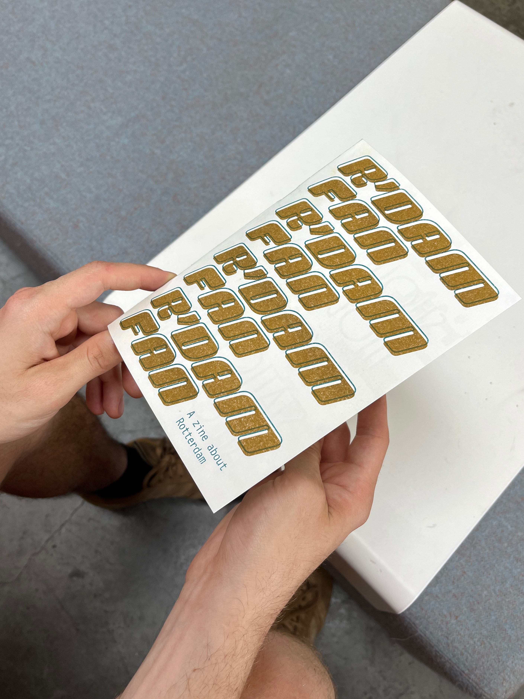
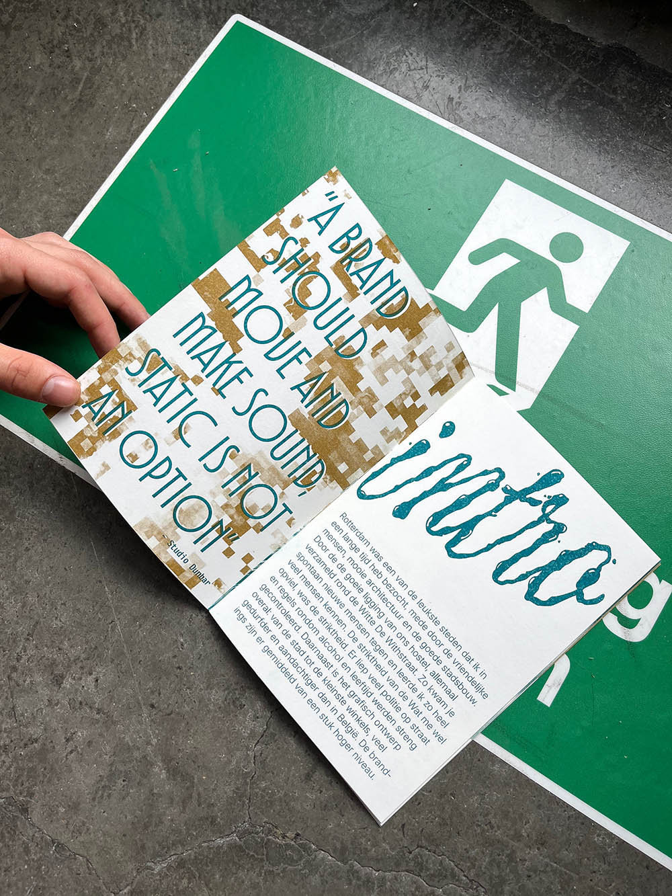
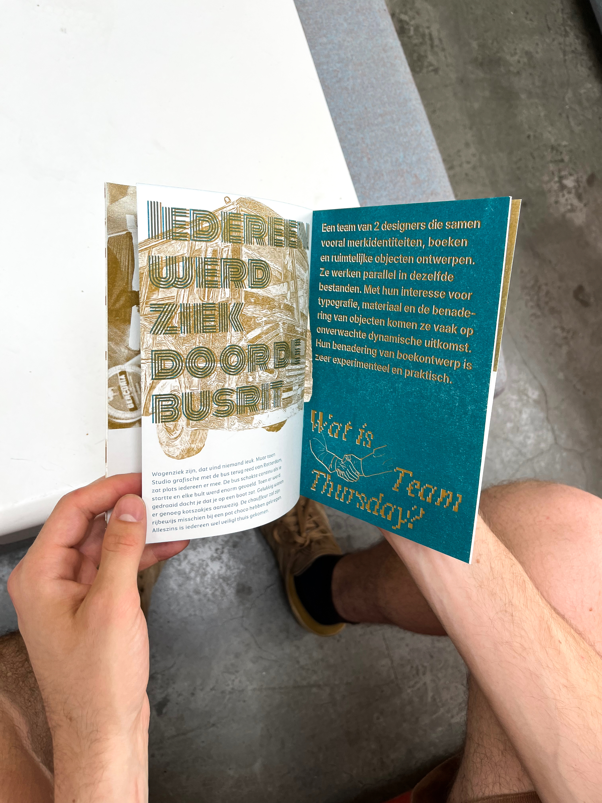
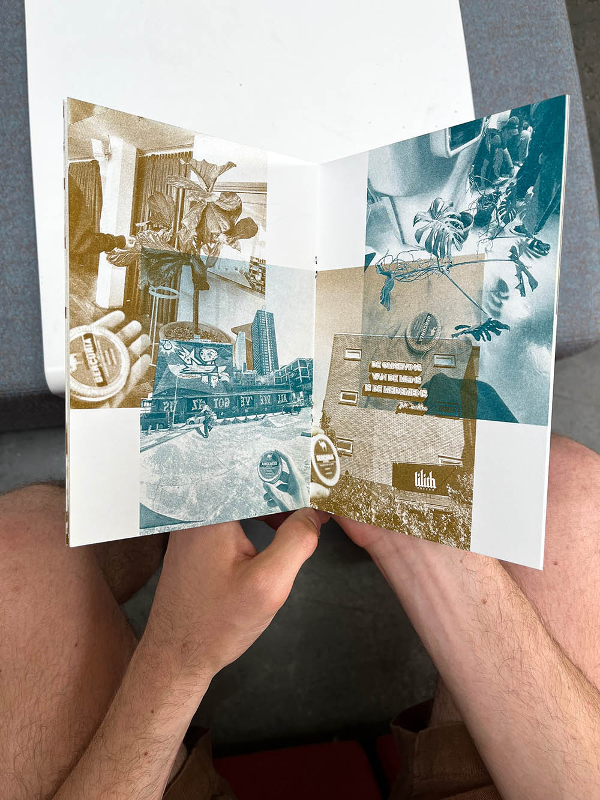
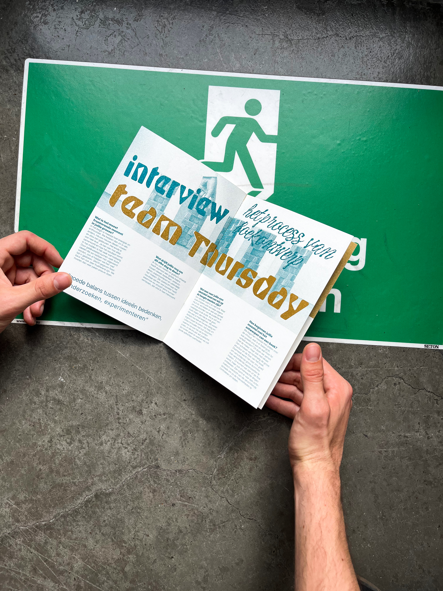
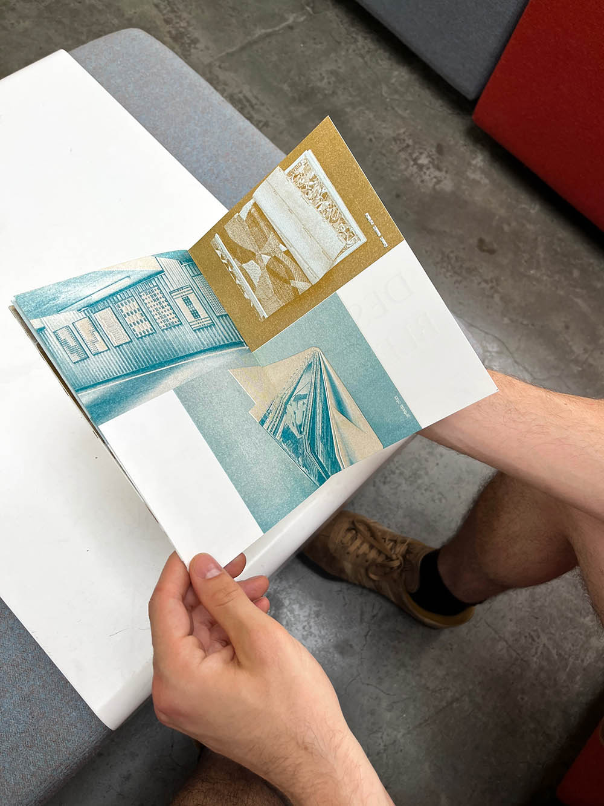
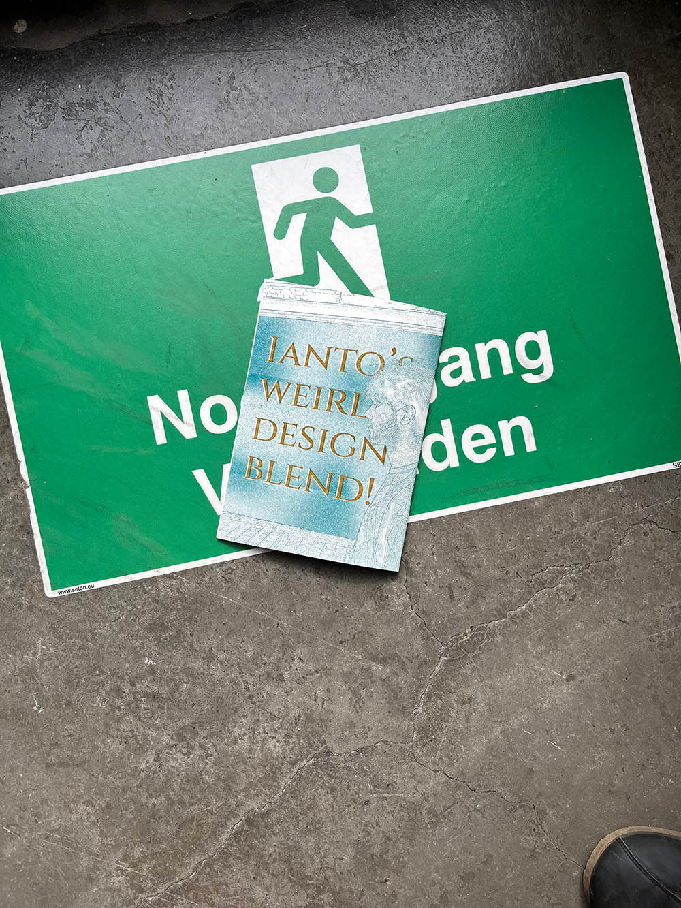

Een fanzine is een kort en leuk boekje van 16 pagina's rond een thema waar je fan van bent. Wij maakten dit rond Rotterdam, waar we op studiereis gingen. We kregen een lijst van thema's die we telkens vrij mochten invullen.
De Fanzine hebben we op een riso machine in 2 kleuren geprint. Aangezien dit het boekje goed samenbindt konden we met het ontwerp ervan alle kanten op gaan. Elke spread bevat daarom verschillende experimenten met typografie en beeld. Op elke spread heb ik een andere Riso of digitale techniek gebruikt.






